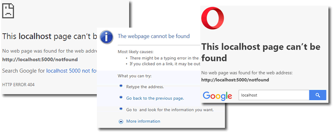
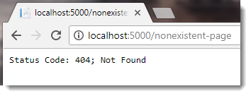
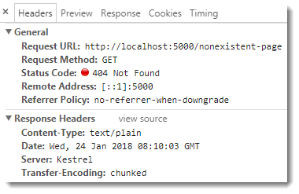
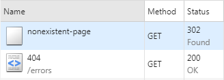
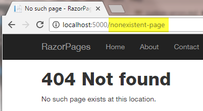

When a visitor tries to request a page on your site that doesn't exist, or an unhandled exception occurs while executing server-side code the web server returns an HTTP status code to the browser indicating that an error occurred. As a site developer, you have two choices when this happens: you can either let the browser show its default notification page;

or you can take control and choose to display your own message.
Status Code Pages Middleware
The ASP.NET team have included middleware for managing HTTP errors in the 400 and 500 ranges. It is called StatusCodePagesMiddleware, and is found in the Microsoft.AspNetCore.Diagnostics package.
There are a number of extension methods for registering StatusCodePagesMiddleware as part of the pipeline in the Configure method of the Startup class. The most basic usage is as follows:
app.UseStatusCodePages();
When an error occurs within the specified range, this usage results in a plain text response with a default message:


Overloads of the UseStatusCodePages method are available to provide some more control over how your application responds to errors, including one that enables you to set the content type and body of the response:
app.UseStatusCodePages("text/html", "<h1>Error! Status Code {0}</h1>");

However, there are a couple of other extension methods that simplify things a lot more. These are UseStatusCodePagesWithRedirects and UseStatusCodePagesWithReExecute. Both of these make use of a page that you create to generate the response, so you have full control over its content. The following example is a simple Razor page designed to let the visitor know that the page they requested does not exist:
@page
@{
ViewData["Title"] = "No such page";
}
<h1>404 Not found</h1>
<p>No such page exists at this location.</p>
This code is in a file named 404.cshtml and is placed in a folder within the Pages folder named Errors.
The UseStatusCodePagesWithRedirects method takes a string representing the location of the custom error page, which can also include a placeholder {0} which will be filled by the status code:
app.UseStatusCodePagesWithRedirects("/errors/{0}");
When an error occurs, the user is redirected to the specified location, in this case - once the placeholder is populated by the middleware - /errors/404.
The UseStatusCodePagesWithReExecute method re-executes the request pipeline using an alternate path (page), and also takes a string with a placeholder:
app.UseStatusCodePagesWithReExecute("/errors/{0}");
To Redirect or Re-execute?
From a user's point of view, it makes little difference which method you use. Both will result in the page that you specify being displayed. The only visible difference will be the URL displayed in the browser. The WithRedirects method results in a different URL appearing in the browser address bar than the one that was requested.
This is the Network output in Chrome for a request to a nonexistent page:

The initial request to /nonexistent-page resulted in a 302 status code and a location header with the value /errors/404, causing the browser to issue a new request. This request was successful, signified by the 200 status code. Now the browser features the address of the error page instead of the one that was initially requested:

With the WithReExecute option, the original HTTP status code is preserved as is the URL in the browser address bar

but the response comes from the alternative location that you specify:

The WithReExecute option wins based on the fact that the visitor can check the browser address bar to see if there are any obvious mistakes in the URL that they provided or followed.
SEO Considerations
The WithReExecute option really wins if Search Engine Optimisation is important to you. The best way to let a search engine know that the incorrect URL it is trying to index does not exist is to respond with a 404 Not Found status code. If you provide a 302 Found followed by a 200 OK response, the search engine will retain the incorrect URL in its index, potentially serving it up within a search result.